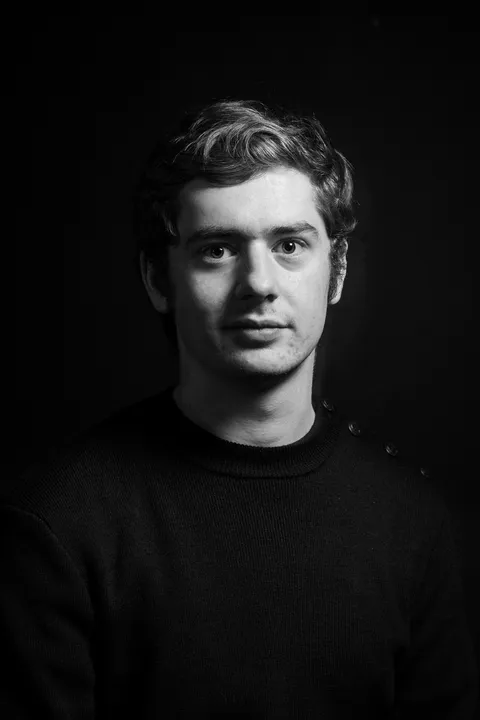

Mariage de M et C-I


Thomas Soleil · Photographe à Toulouse & Castres
L’approche
Un mariage, un événement ou un moment à deux : mon envie est de photographier ce que vous partagez, avec discrétion.
Portfolio
Prestations

Derrière l’objectif
Je m’appelle Thomas. Entre Toulouse et Castres, je développe mes projets photographiques autour du mariage et des moments partagés avec vos proches.
Je souhaite vous accompagner avec discrétion, en laissant de la place aux instants spontanés. Nous prenons le temps d’échanger sur votre journée et les images qui comptent pour vous.
Un premier échange
Une date, un lieu, une envie : racontez-moi votre projet.